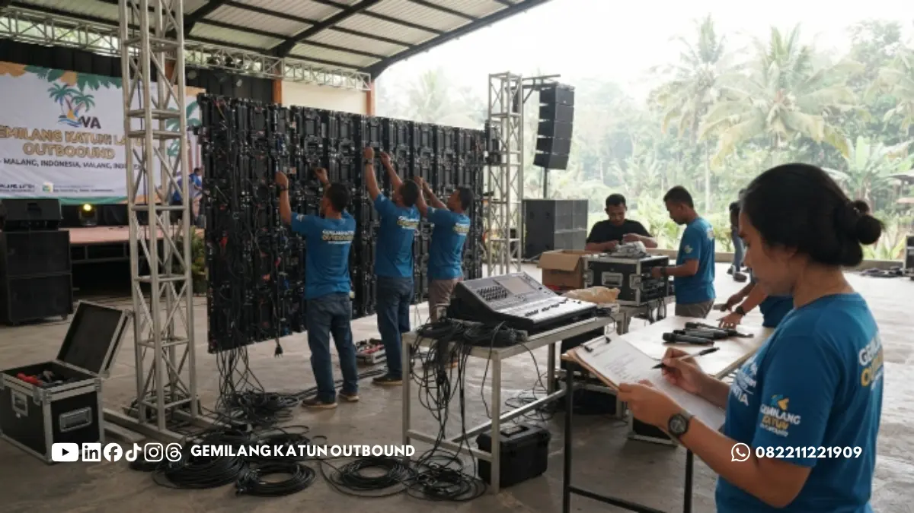

Daftar Isi
- Apa Itu Gathering Per Departemen dan All-in Sekantor?
- Untuk Siapa Format Gathering Per Departemen Lebih Cocok?
- Bagaimana Perbandingan Biaya Gathering Per Departemen dan All-in Sekantor?
- Format Mana yang Lebih Efektif Membangun Keakraban Tim?
- Apa Kelebihan dan Kekurangan Masing-masing Format?
- Bagaimana Cara Menentukan Format yang Tepat untuk Perusahaan?
- Apa Saja Kesalahan Umum saat Memilih Format Gathering?
- Tips Praktis Sebelum Memutuskan Format Gathering
- Pertanyaan Umum (FAQ)
Gathering per departemen cocok untuk tim kecil yang butuh kedekatan mendalam dan anggaran terbatas, sementara all-in sekantor lebih pas membangun keakraban lintas divisi dalam satu momentum besar sekaligus.
- Gathering per departemen umumnya lebih hemat karena skala peserta lebih kecil dan kebutuhan logistik lebih sederhana.
- All-in sekantor lebih efektif menyatukan visi perusahaan lintas divisi, tetapi butuh anggaran dan perencanaan yang jauh lebih besar.
- Pemilihan format sebaiknya mempertimbangkan struktur organisasi, tujuan acara, dan kondisi anggaran tahun berjalan.
- Vendor gathering Malang berpengalaman dapat membantu perusahaan menghitung opsi mana yang paling realistis dijalankan.
- Kombinasi keduanya, misalnya gathering per departemen rutin dan all-in sekantor tahunan, sering menjadi solusi paling seimbang.
Apa Itu Gathering Per Departemen dan All-in Sekantor?
Gathering per departemen adalah acara kebersamaan yang diselenggarakan secara terpisah untuk masing-masing divisi atau tim kerja, sedangkan all-in sekantor menggabungkan seluruh karyawan dari berbagai departemen dalam satu acara besar.
Gathering per departemen biasanya digagas langsung oleh kepala divisi atau tim HR yang menangani unit kerja tertentu. Skala pesertanya lebih terbatas, mulai dari belasan hingga puluhan orang, sehingga suasana acara cenderung lebih personal.
Aktivitas yang dipilih pun bisa lebih spesifik menyesuaikan karakter tim, misalnya divisi marketing memilih aktivitas yang lebih dinamis, sementara divisi finance memilih format yang lebih santai dan reflektif.
Sebaliknya, all-in sekantor menyatukan seluruh karyawan tanpa memandang divisi dalam satu waktu dan lokasi yang sama. Format ini umumnya diinisiasi oleh manajemen puncak sebagai bagian dari agenda tahunan perusahaan, seperti perayaan ulang tahun perusahaan, family gathering akhir tahun, atau team building lintas fungsi.
Karena melibatkan jumlah peserta yang jauh lebih besar, kebutuhan logistik, konsumsi, dan pengelolaan acara pun menjadi lebih kompleks. Kedua format ini sama-sama bertujuan meningkatkan kepuasan kerja dan mempererat hubungan antar-karyawan, namun cara pencapaiannya berbeda tergantung skala dan kedalaman interaksi yang ingin dibangun.
Untuk Siapa Format Gathering Per Departemen Lebih Cocok?
Gathering per departemen paling cocok untuk perusahaan dengan struktur organisasi besar yang memiliki banyak divisi dengan ritme kerja berbeda-beda.
Perusahaan dengan divisi yang memiliki jadwal kerja padat dan sulit disamakan, misalnya tim operasional lapangan dan tim kantor, akan lebih mudah menyelenggarakan gathering per departemen karena jadwal bisa disesuaikan per unit kerja.
Selain itu, tim yang baru dibentuk atau baru mengalami restrukturisasi juga lebih diuntungkan dengan format ini karena fokus utamanya adalah membangun kekompakan internal sebelum berinteraksi dengan divisi lain dalam skala lebih besar.
Perusahaan dengan anggaran terbatas namun tetap ingin rutin mengadakan acara kebersamaan juga cenderung memilih gathering per departemen, karena format ini dapat dijalankan lebih sering dengan biaya yang lebih terkendali dibanding menyelenggarakan all-in sekantor setiap periode.
Bagaimana Perbandingan Biaya Gathering Per Departemen dan All-in Sekantor?
Secara umum, gathering per departemen lebih hemat karena jumlah peserta lebih sedikit, sementara all-in sekantor memerlukan anggaran signifikan akibat skala peserta dan kompleksitas logistik yang lebih besar.
Biaya gathering sangat dipengaruhi oleh jumlah peserta, durasi acara, jenis aktivitas, konsumsi, transportasi, dan honor fasilitator atau vendor pelaksana. Pada gathering per departemen, karena peserta hanya melibatkan satu tim, kebutuhan venue bisa lebih fleksibel, mulai dari ruang meeting hotel kecil hingga tempat wisata alam berskala menengah di kawasan Malang dan Batu.

Konsumsi juga lebih mudah dikelola karena preferensi menu bisa disesuaikan dengan karakter tim yang lebih homogen. Sementara itu, all-in sekantor membutuhkan venue berkapasitas besar, transportasi armada dalam jumlah banyak, serta pengelolaan konsumsi untuk ratusan orang sekaligus.
Biaya per kepala sebenarnya bisa lebih efisien karena skala ekonomi, namun total anggaran yang dikeluarkan perusahaan tetap jauh lebih besar dibanding menyelenggarakan beberapa gathering per departemen secara terpisah dalam periode yang sama.
Perusahaan yang ingin menghitung estimasi biaya secara akurat sebaiknya berkonsultasi langsung dengan vendor gathering Malang yang berpengalaman menangani kedua skala acara, agar anggaran yang disusun benar-benar realistis dan sesuai kebutuhan.
Format Mana yang Lebih Efektif Membangun Keakraban Tim?
Efektivitas keakraban bergantung pada tujuan acara. Gathering per departemen unggul dalam membangun kedekatan mendalam antar-anggota tim, sedangkan all-in sekantor unggul dalam menyatukan visi dan budaya kerja lintas divisi.
Pada skala departemen, interaksi antar-peserta jauh lebih intens karena jumlah orang yang terlibat lebih sedikit. Setiap anggota tim memiliki kesempatan lebih besar untuk berpartisipasi aktif dalam permainan, diskusi, atau sesi refleksi bersama.
Hal ini membuat gathering per departemen lebih efektif untuk memperbaiki komunikasi internal, menyelesaikan konflik kecil dalam tim, atau memperkuat kepercayaan antar-rekan kerja yang berinteraksi setiap hari.
Sebaliknya, all-in sekantor lebih efektif membangun rasa memiliki terhadap perusahaan secara keseluruhan. Karyawan dari berbagai divisi yang jarang berinteraksi dalam pekerjaan sehari-hari mendapat kesempatan untuk saling mengenal, memahami peran divisi lain, dan merasakan kebersamaan sebagai satu kesatuan organisasi.
Momen ini juga sering dimanfaatkan manajemen untuk menyampaikan visi, capaian, dan arah perusahaan ke depan secara langsung kepada seluruh karyawan.
Apa Kelebihan dan Kekurangan Masing-masing Format?
Setiap format memiliki kelebihan dan keterbatasan yang perlu dipertimbangkan sebelum perusahaan memutuskan pilihan.
Kelebihan gathering per departemen antara lain anggaran lebih terkendali, perencanaan lebih fleksibel, aktivitas dapat disesuaikan dengan karakter tim, dan pelaksanaan lebih mudah diatur ulang jika ada perubahan jadwal.
Kekurangannya, format ini kurang efektif membangun sinergi antar-divisi dan berpotensi memperkuat sekat antar-tim jika tidak diimbangi dengan agenda lintas departemen secara berkala.
Kelebihan all-in sekantor antara lain mampu menyatukan seluruh karyawan dalam satu momentum, memperkuat identitas dan budaya perusahaan, serta menjadi ajang komunikasi langsung antara manajemen dan karyawan.
Kekurangannya, biaya jauh lebih besar, perencanaan lebih rumit, dan interaksi personal antar-peserta cenderung lebih dangkal karena jumlah peserta yang terlalu banyak untuk satu sesi kegiatan.
Bagaimana Cara Menentukan Format yang Tepat untuk Perusahaan?
Penentuan format gathering yang tepat sebaiknya mempertimbangkan tiga faktor utama: tujuan acara, kondisi anggaran, dan struktur organisasi perusahaan saat ini.
Langkah pertama adalah menetapkan tujuan utama acara. Jika tujuannya memperbaiki komunikasi internal tim tertentu, gathering per departemen lebih relevan. Jika tujuannya memperkuat identitas perusahaan secara menyeluruh, all-in sekantor menjadi pilihan yang lebih tepat.
Langkah kedua adalah meninjau kondisi anggaran tahun berjalan. Perusahaan dengan anggaran terbatas dapat memprioritaskan gathering per departemen secara bergilir setiap periode, sementara perusahaan dengan alokasi anggaran acara tahunan yang lebih besar bisa mempertimbangkan all-in sekantor sebagai agenda puncak tahunan.
Langkah ketiga adalah melihat struktur organisasi. Perusahaan dengan banyak cabang atau divisi yang tersebar secara geografis cenderung lebih realistis menyelenggarakan gathering per departemen di masing-masing lokasi, dibanding memaksakan seluruh karyawan berkumpul dalam satu tempat.
Banyak perusahaan pada akhirnya memilih kombinasi keduanya, yaitu menjalankan gathering per departemen secara rutin sepanjang tahun untuk menjaga kekompakan tim harian, sekaligus menyelenggarakan all-in sekantor sekali dalam setahun sebagai momentum kebersamaan besar seluruh perusahaan.
Apa Saja Kesalahan Umum saat Memilih Format Gathering?
Kesalahan paling umum adalah memaksakan format tertentu tanpa mempertimbangkan kondisi riil perusahaan, sehingga acara justru tidak mencapai tujuan yang diharapkan.
Beberapa perusahaan memaksakan all-in sekantor meski anggaran sangat terbatas, sehingga kualitas acara menjadi seadanya dan justru menurunkan antusiasme karyawan.
Ada pula perusahaan yang terlalu sering menyelenggarakan gathering per departemen tanpa pernah mengadakan agenda lintas divisi, sehingga sekat antar-tim justru semakin kuat alih-alih mencair.
Kesalahan lain adalah tidak melibatkan vendor gathering Malang yang berpengalaman sejak tahap perencanaan awal, sehingga estimasi biaya, pemilihan tempat, dan susunan acara tidak disusun secara matang. Hal ini sering berujung pada pembengkakan anggaran di tengah jalan atau acara yang berjalan tidak sesuai ekspektasi peserta.
Tips Praktis Sebelum Memutuskan Format Gathering
Sebelum menentukan pilihan, tim HR atau panitia acara sebaiknya melakukan beberapa langkah persiapan agar keputusan yang diambil lebih matang dan sesuai kebutuhan perusahaan.
Pertama, lakukan survei singkat kepada karyawan untuk mengetahui preferensi mereka terhadap format acara. Kedua, tetapkan anggaran maksimal sejak awal sebagai patokan dalam menyusun konsep acara.
Ketiga, konsultasikan rencana dengan vendor gathering Malang yang telah berpengalaman menangani kedua format, baik skala departemen maupun skala sekantor penuh.
Keempat, pertimbangkan lokasi yang mudah dijangkau seluruh peserta, terutama jika perusahaan memiliki karyawan dari berbagai area di Malang Raya. Kelima, susun jadwal acara jauh-jauh hari agar tidak berbenturan dengan periode kerja padat perusahaan.
Tidak ada format gathering yang mutlak lebih baik antara per departemen atau all-in sekantor, karena keduanya memiliki fungsi berbeda. Gathering per departemen unggul dari sisi efisiensi biaya dan kedalaman interaksi tim, sementara all-in sekantor unggul dalam membangun kebersamaan dan identitas perusahaan secara menyeluruh.
Perusahaan yang bijak biasanya menggabungkan keduanya sesuai siklus kebutuhan organisasi, dan berkonsultasi dengan vendor gathering Malang yang berpengalaman agar setiap keputusan format acara didukung perencanaan yang matang, realistis, dan sesuai anggaran.
Ingin berdiskusi menentukan format gathering yang paling pas untuk tim atau perusahaan Anda? Hubungi Gemilang Katun Outbound melalui WhatsApp 0822-1122-1909 untuk konsultasi gratis.
PERTANYAAN UMUM (FAQ)